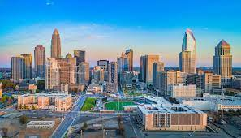

Charlotte est une grande ville et un important centre économique
de Caroline du Nord. Son centre-ville moderne (Uptown) abrite le musée Levine Museum
of the New South,
qui retrace l'histoire post-guerre de Sécession
dans le Sud et propose des expositions scientifiques pratiques au
Discovery Place. Uptown est également connu pour le NASCAR Hall of Fame,
qui rend hommage aux courses automobiles à travers des expositions interactives et des films
Messi's Career
By: Thierno Sissoko
Lionel Messi, in full Lionel Andrés Messi, also called Leo Messi, (born June 24, 1987, Rosario, Argentina), Argentine-born football (soccer) player who was named Fédération Internationale de Football Association (FIFA) world player of the year six times (2009–12, 2015, and 2019).
Messi started playing football as a boy and in 1995 joined the youth team of Newell’s Old Boys (a Rosario-based top-division football club). Messi’s phenomenal skills garnered the attention of prestigious clubs on both sides of the Atlantic.